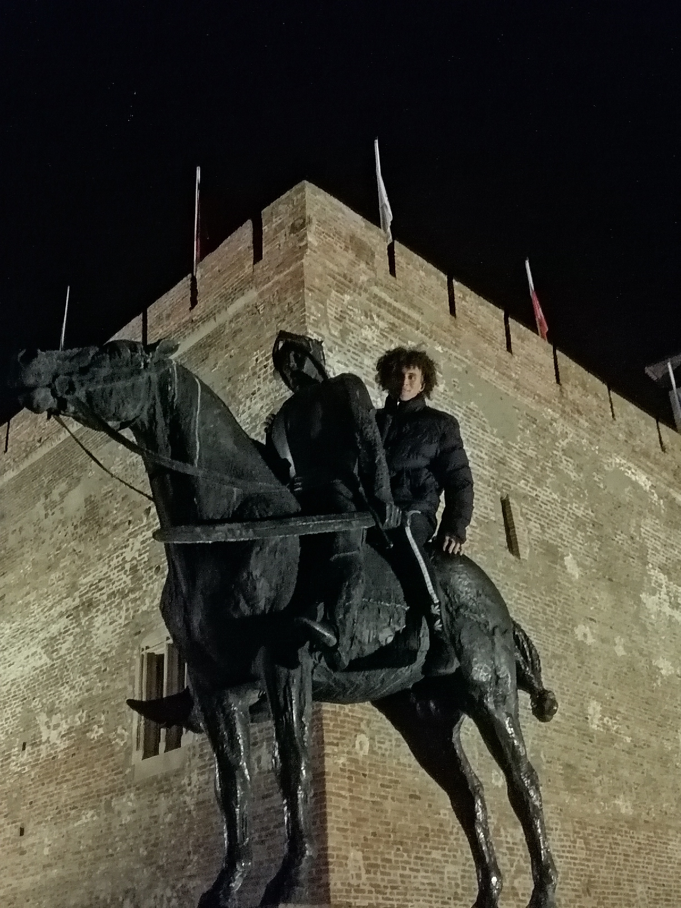

Kovalszky Kristóf Portfólió
 Egyik
kedvenc elfoglaltságom a túrázás. Kikapcsol, ha a termászetben vagyok,
főleg ha együtt a barátaimmal, barőtnőmmel, családdal. Szeretem a
megterhelő, veszélyes célpontokat.Ezen a képen egy szakadék szélén
ülünk, alul pedig egy barlang látható. A kép Horvátországban készült.
Egyik
kedvenc elfoglaltságom a túrázás. Kikapcsol, ha a termászetben vagyok,
főleg ha együtt a barátaimmal, barőtnőmmel, családdal. Szeretem a
megterhelő, veszélyes célpontokat.Ezen a képen egy szakadék szélén
ülünk, alul pedig egy barlang látható. A kép Horvátországban készült.Ez a kép Gyulán készült a vár előtt.Ez a fotó jellemzi az én személyiségemet. Szeretek eltérni a megszokottól, úgy alakítom a napjaimat, hogy azok izgalmasak, rendkívüliek legyenek.Nem bírom elviselni az unalmas hétkönapokat.
 Legjobban talán az együtt töltött időt szeretem a sétálásban,
felfedezésben. Az életünk folyamán egy dolgot nem tudunk megvenni:az IDŐT. Ezért oda kell arra
figyelnünk, hogy minél több időt töltsünk a szeretteinkkel.
Legjobban talán az együtt töltött időt szeretem a sétálásban,
felfedezésben. Az életünk folyamán egy dolgot nem tudunk megvenni:az IDŐT. Ezért oda kell arra
figyelnünk, hogy minél több időt töltsünk a szeretteinkkel. |